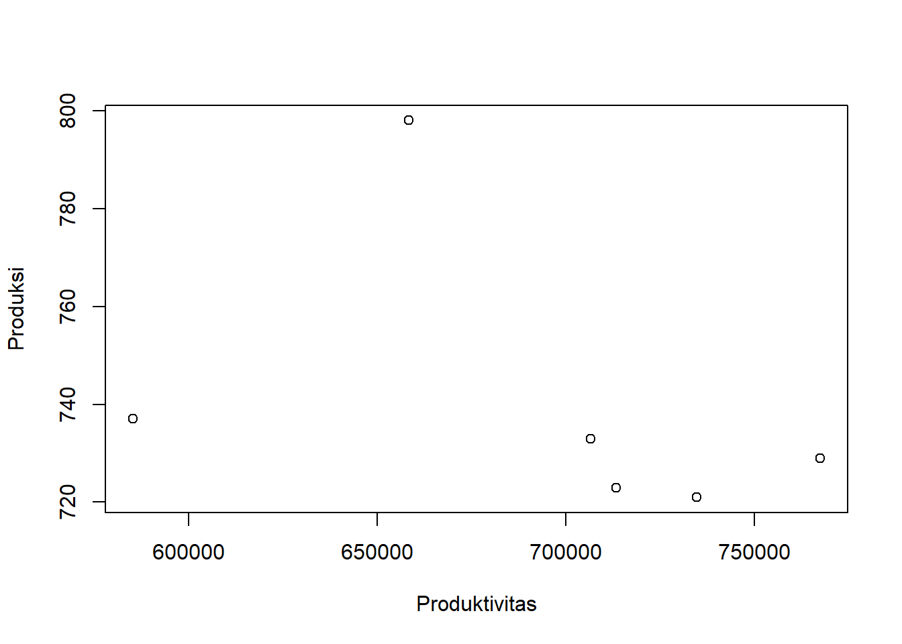
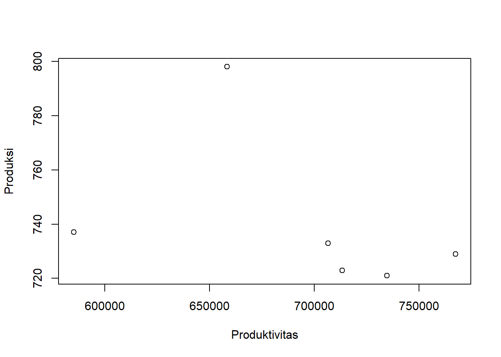

library(readxl)
dat<-read_excel("latihan.xlsx")
reg1<-lm(Y~X,data=dat)
plot(dat$Y,dat$X,ylab="Produksi",xlab="Produktivitas")
Metode Penelitian Politeknik APP Jakarta

Ekspor adalah kegiatan atau aktivitas mengeluarkan barang dari dalam negeri ke luar negeri dengan mengikuti ketentuan dan peraturan yang berlaku. Komoditas kakao merupakan salah satu komoditas unggulan perkebunan Indonesia yang memegang peranan cukup penting dalam perekonomian Indonesia yakni sebagai penghasil devisa negara, sumber pendapatan petani, penciptaan lapangan kerja, mendorong agribisnis dan agroindustri serta pengembangan wilayah. Komoditas kakao sangat dibutuhkan di negara-negara di Eropa tentunya untuk pembuatan coklat. Namun, di negara Indonesia sendiri masyarakat mengonsumsi kakao masih cukup rendah yaitu rata-rata 0,4 kg/kapita/tahun, berbeda dengan negara Eropa yang memiliki nilai konsumsi kakao sebesar 8 kg/kapita/tahun.
Produktivitas kakao di Indonesia bisa dikatakan cukup fluktuatif perkembangannya, padahal luas lahan yang tersedia cukup sesuai untuk komoditi ini. Menurut data statistik perkebunan tahun 2016 luas areal kakao Nasional dikatakan cukup luas yaitu mencapai 1.720.773 Ha. Namun, sangat disayangkan luas areal kakao setiap tahunnya mengalami penurunan, sehingga itu bisa menjadi salah satu penghambat untuk produksi dan produktivitas kakao dari negara Indonesia.
Pembatasan suatu masalah digunakan untuk membatasi jangkauan proses yang akan dibahas agar tetap pada satu topik dan menghindari pelebaran pokok permasalahan. Peneliti menetapkan batasan masalah atas beberapa hal, yaitu membahas terkait produksi, produktivitas, dan luas areal Kakao di Indonesia.
Bagaimana perkembangan produktivitas komoditi kakao di Indonesia periode 2016-2021?
Untuk mengetahui perkembangan produktivitas kakao di Indonesia dari tahun ke tahun, dapat dilihat pula dari perkembangan produksinya dan juga luas areal yang ada di dalam negeri sehingga bisa dilihat seberapa besar untuk ekspornya.
Perdagangan Internasional merupakan transaksi bisnis yang melibatkan lebih dari satu negara (Wahono Diphayana). Perdagangan Internasional popular diketahui yaitu dapat meningkatkan GDP atau PDB suatu negara. Peningkatan GDP atau GDP suatu negara biasa disebut dengan kegiatan ekspor impor. Kegiatan jual beli antar negara disebabkan adanya faktor-faktor di dalamnya, salah satunya kebutuhan untuk memperluas target pasar. Kegiatan dagang negara satu dengan negera lain tidak menerus dengan barang tetapi jasa. Sebuah negara yang memiliki SDM berkualitas bisa menjadi salah satunya.
Pengertian produksi menurut Zulian Yamit (2003:5) menyatakan bahwa kegiatan untuk mengolah input melalui proses transformasi atau pengubahan sedemikian rupa sehingga menjadi ouput yang berupa barang dan jasa. Produksi merupakan kegiatan untuk menghasilkan suatu barang atau jasa. Produksi berkaitan dengan kegiatan pokok ekonomi, yang sebagai arti kegiatan ekonomi adalah sebuah aktivitas yang dilakukan manusia untuk memenuhi kebutuhan hidupnya. Dalam arti lain, produksi dapat menciptakan atau menghasilkan nilai guna suatu barang.
Menurut Kussrianto dalam Sutrisno (2017:102), mengemukakan bahwa produktivitas adalah perbandingan antara hasil yang dicapai dengan peran serta tenaga kerja persatuan waktu. Produktivitas memliki arti dimana sebuah barang maupun jasa dapat menghasilkan lebih banyak output dengan waktu yang sedikit atau terbatas, apabila output yang dihasilkan semakin banyak tingkat produktivitas yang terjadi akan semakin tinggi pula. Faktor-faktor yang terjadi pada produktivitas sendiri sangat berpengaruh dari produksi yang dihasilkan pada sebuah barang maupun jasa.
| Tahun | Produksi | Produktivitas |
|---|---|---|
| 2016 | 658.400 | 798 |
| 2017 | 585.200 | 737 |
| 2018 | 767.400 | 729 |
| 2019 | 734.700 | 721 |
| 2020 | 713.400 | 723 |
| 2021 | 706.500 | 733 |
library(readxl)
dat<-read_excel("latihan.xlsx")
reg1<-lm(Y~X,data=dat)
plot(dat$Y,dat$X,ylab="Produksi",xlab="Produktivitas")
Teknik analisis yang digunakan dalam penelitian ini adalah teknik kuantitatif dan penjabaran deskriptif. Teknik analisis kuantitatif yang dilakukan dalam penelitian ini dengan melakukan regresi menggunakan metode yang dipilih adalah Ordinary Least Square (OLS) dengan 1 variabel independen. Penelitian ini bertujuan untuk mengetahui produksi, produktivitas, serta luas areal pada komoditi kakao di Indonesia dari tahun ke tahun. Rumus yang digunakan untuk regresi, sebagai berikut:
Y= β0 + 𝛽1X+ μ
Keterangan:
Y = Produktivitas kakao
β0 = Konstanta produktivitas
β1 = Konstanta produksi
X = Produksi
μ = error term
1.Perkembangan Produksi Kakao Indonesia
Tabel 1. Perkembangan produksi kakao Indonesia tahun 2016-2021
| Tahun | Produksi (Ton) | Perkembangan (%) |
|---|---|---|
| 2016 | 658.400 | - |
| 2017 | 585.200 | -11,11 |
| 2018 | 767.400 | 31,13 |
| 2019 | 734.700 | -4,26 |
| 2020 | 713.400 | -2,89 |
| 2021 | 706.500 | -0,96 |
| Rata-rata | 1,985 |
Sumber: Badan Pusat Statistik (data diolah)
Berdasarkan tabel diatas, dapat dilihat perkembangan produksi kakao di Indonesia pada periode 2016-2021 mengalami fluktuasi. Pada tahun 2017, terlihat perkembangan produksi kakao sangat turun drastis yaitu hanya sebesar -11,11%. Namun, naik drastis juga ditahun berikutnya 2018, yaitu sebesar 31,13%. Tetapi ditahun-tahun berikutnya justru malah semakin menurun produksinya, hingga mencapai rata-rata 1,985.
2.Perkembangan Produktivitas Kakao Indonesia
Tabel 2. Perkembangan produktivitas kakao Indonesia tahun 2016-2021
| Tahun | Produktivitas (Kg/Ha) | Perkembangan (%) |
|---|---|---|
| 2016 | 798 | - |
| 2017 | 737 | -7,64 |
| 2018 | 729 | -1,08 |
| 2019 | 721 | -1,09 |
| 2020 | 723 | 0,27 |
| 2021 | 733 | 1,38 |
| Rata-rata | -1,36 |
Sumber: Direktorat Jenderal Perkebunan (data diolah)
Berdasarkan tabel diatas, dapat dilihat perkembangan produktivitas kakao Indonesia pada periode 2016-2021 mengalami fluktuasi sama seperti produksi kakaonya. Pada tahun 2017, perkembangan produktivitas sebesar -7,64% namun ditahun berikutnya justru menurun sangat drastis hingga mencapai -1,08% perkembangannya. Pada tahun 2020, perkembangannya hanya sebesar 0,27% yang meningkat dari tahun sebelumnya sebesar -1,09%. Di tahun 2021, produktivitas kakao meningkat cukup tinggi yaitu 1,38% padahal di tahun 2021 wabah virus COVID-19 sedang melonjak-lonjaknya namun produktivitas kakao untuk di ekspor justru semakin tinggi.
| Variabel | Coeficient | Std.Error | t. value | Prob |
|---|---|---|---|---|
| Intercept | 1353905.6 | 753327.1 | 1.797 | 0.147 |
| X | -891.2 | 1017.1 | -0.876 | 0.430 |
| R-Squared | 1 |
|---|---|
| Adjusted R-Squared | -0.04872 |
| F-Statistic | 0.7677 |
| Prob (F-Statistic) | 0.4304 |
Produksi kakao tidak berpengaruh terhadap produktivitas. Ditunjukkan dengan dilihat dari probabilitas X (Produktivitas) yang tidak berpengaruh. Dimana produksi sering menjadi faktor yang dapat mendorong naik dan turunnya produktivitas. Nilai koefisien produksi sebesar 1353905.6 yang berarti kenaikan perubahan produksi tidak berpengaruh terhadap produktivitas. Dengan hasil ini maka dapat disimpulkan bahwa produksi kakao tidak berpengaruh terhadap produktivitas.
Hasil regresinya adalah
library(readxl)
dat<-read_excel("latihan.xlsx")
reg1<-lm(Y~X,data=dat)
summary(reg1)
Call:
lm(formula = Y ~ X, data = dat)
Residuals:
1 2 3 4 5 6
15675 -111889 63182 23352 3834 5846
Coefficients:
Estimate Std. Error t value Pr(>|t|)
(Intercept) 1353905.6 753327.1 1.797 0.147
X -891.2 1017.1 -0.876 0.430
Residual standard error: 65860 on 4 degrees of freedom
Multiple R-squared: 0.161, Adjusted R-squared: -0.04872
F-statistic: 0.7677 on 1 and 4 DF, p-value: 0.4304Berdasarkan data hasil analisis kuantitatif yang telah dilakukan, setelah diamati produksi komoditi kakao tidak berpengaruh terhadap perkembangan produktivitasnya. DImana produksi seharusnya bisa menjadi nilai guna suatu barang atau jasa namun, pada hal ini produksi tidak berpengaruh atau berarti tidak menjadi nilai guna untuk produktivitasnya.
Produksi Kakao Indonesia Terus Menurun 3 Tahun Terakhir | Databoks. (n.d.). Retrieved January 19, 2023, from https://databoks.katadata.co.id/datapublish/2022/11/01/produksi-kakao-indonesia-terus-menurun-3-tahun-terakhir
Media, K. C. (2022, January 29). Apa Itu Ekspor: Pengertian, Jenis, Tujuan, dan Manfaatnya Halaman all. KOMPAS.com. https://money.kompas.com/read/2022/01/29/152419826/apa-itu-ekspor-pengertian-jenis-tujuan-dan-manfaatnya
Kementerian Pertanian Direktorat Jenderal Perkebunan » Buku Statistik Perkebunan 2020-2022. (n.d.). Retrieved January 19, 2023, from https://ditjenbun.pertanian.go.id/?publikasi=buku-statistik-perkebunan-2020-2022
Kementerian Pertanian Direktorat Jenderal Perkebunan » Cokelatku Budayaku Indonesiaku: TUMBUHKAN BUDAYA KORPORASI PEKEBUN KAKAO. (n.d.). Retrieved January 19, 2023, from https://ditjenbun.pertanian.go.id/cokelatku-budayaku-indonesiaku-tumbuhkan-budaya-korporasi-pekebun-kakao/